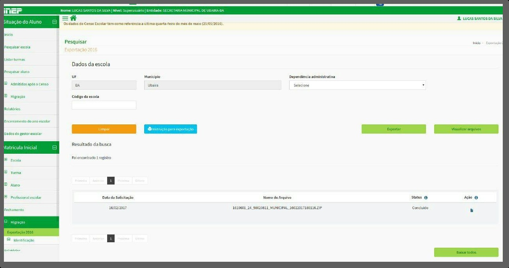

Como importar dados do Censo Escolar para carga inicial no i-Educar
Exportação no site no Educacenso
O download dos dados é sempre referente ao ano anterior, então você tem que acessar o ambiente do ano anterior ao atual.
Exemplo: em 2018 para realizar a extração dos dados do Censo Escolar você deverá acessar o site do Educacenso de 2017 no ambiente de produção e na página inicial preencher com seu login de acesso.
Após acessar o site, você deverá buscar pela opção de Exportação de dados (o nome pode ser diferente).

O usuário precisa ter um perfil Administrador (nível superusuário) para poder visualizar a opção de Exportação.
Dica: Para auxiliar, o Censo Escolar disponibiliza um manual de como extrair todos estes dados.
Em alguns casos, o site do Censo Escolar pode estar indisponível, não sendo possível acessar nem extrair dados, como o exemplo da mensagem abaixo:
Neste caso você pode encaminhar um e-mail para a equipe do Censo Escolar solicitando os dados. Os contatos estão listados no manual mencionado acima.
Importação no i-Educar
Localização: Módulo Educacenso > Importações > Importação Educacenso
Após obter o arquivo, basta acessar o menu indicado acima e selecionar o arquivo para importação no campo Arquivo. No campo Ano você irá informar o ano do arquivo. Como fizemos o download do arquivo do ano anterior ao atual, é este que deve ser informado no campo.